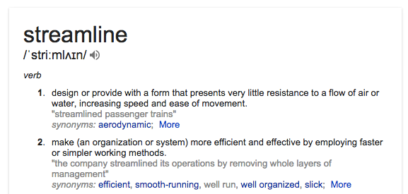
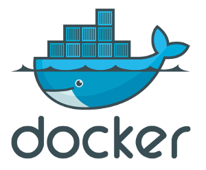

Pat me on the back

WHOAMIGiacomo Bagnoli
Currently Backend Engineer at Gild
Nothing in particular. It's not* broken, so let's fix it.
* conditions apply
Your development
environment is probably
a beautiful, unique
snowflake
Open source platform
/sbin/init, no device emulationchroot on steroids
cgroups and namespacescgroupscgroups
* not a virtualization method, containers != VM
Portable, read-only layers.
Images are composed at run-time to form the container root FS using an union filesystem.
Processes tricked to see the filesystem as R/W.
The writable layer is discarded if the container is not committed.
The read-only and portable properties are important as they enable sharing (via the docker hub).
Docker images form a Direct Acyclic Graph.
Each layer is cached (possibly) and reused by other images.
This means that if multiple images derive from debian:wheezy,
that particular image is shared by all of them (thus downloaded once).
Images are pushed/pull to/from the docker hub.
$ docker pull ubuntu:14.04
$ docker pull ubuntu:12.04
$ docker pull redis:2.8.13
$ docker pull debian:wheezy
$ docker pull mongo:2.6.4
$ docker images
REPOSITORY TAG IMAGE ID CREATED VIRTUAL SIZE
redis 2.8.13 dd52dc9c8f76 9 minutes ago 98.44 MB
mongo 2.6.4 dd1f260c0731 12 minutes ago 391.2 MB
debian wheezy 9cdcc6025135 18 hours ago 85.19 MB
ubuntu 14.04 96864a7d2df3 2 days ago 204.4 MB
ubuntu 12.04 ec966722cde4 2 days ago 103.8 MB
$ docker images --tree
└─511136ea3c5a Virtual Size: 0 B
└─b37448882294 Virtual Size: 85.19 MB
└─9cdcc6025135 Virtual Size: 85.19 MB Tags: debian:wheezy
├─e365f7cdb352 Virtual Size: 85.52 MB
│ └─b15940870e43 Virtual Size: 85.52 MB
│ └─22ad4fc6b16f Virtual Size: 98.44 MB
│ └─bd1e22dd175d Virtual Size: 98.44 MB
│ └─3b1ce200fdad Virtual Size: 98.44 MB
│ └─dd52dc9c8f76 Virtual Size: 98.44 MB Tags: redis:2.8.13
└─49fd1ae472a8 Virtual Size: 85.52 MB
└─6c203838fd07 Virtual Size: 99.62 MB
└─b1cd74f30329 Virtual Size: 391.2 MB
└─9d0a3438646f Virtual Size: 391.2 MB
└─dd1f260c0731 Virtual Size: 391.2 MB Tags: mongo:2.6.4
Ubuntu 14.04 image has no ruby at all. Repos have ruby 1.9.
Let's create an image with 2.1 as default.
Dockerfile:
FROM ubuntu:14.04
MAINTAINER Giacomo Bagnoli <gbagnoli@gmail.com>
RUN echo "deb http://ppa.launchpad.net/brightbox/ruby-ng/ubuntu trusty main" > \
/etc/apt/sources.list.d/ruby-ng.list
RUN apt-key adv --keyserver hkp://keyserver.ubuntu.com:80 --recv-keys C3173AA6
RUN apt-get update
RUN apt-get install -y ruby2.1
Build!
$ docker build --rm -t rubyday/ruby:2.1 .
Each directive in the Dockerfile adds a layer
$ docker images --tree
└─96864a7d2df3 Virtual Size: 204.4 MB Tags: ubuntu:14.04
└─8f1b6341c5be Virtual Size: 204.4 MB # MAINTAINER
└─d323cc59da91 Virtual Size: 204.4 MB # RUN
└─724a6664d97a Virtual Size: 204.4 MB # RUN
└─8614dab05fbe Virtual Size: 224.8 MB # RUN
└─d7ae4a198781 Virtual Size: 257.2 MB Tags: rubyday/ruby:2.1 # RUN
$ docker run -t rubyday/ruby:2.1 ruby -v
ruby 2.1.2p95 (2014-05-08 revision 45877) [x86_64-linux-gnu]
Woah, 53Mb. apt-get update adds 20Mb to the image.
Let's remove apt-get files by adding another RUN statement
diff --git a/ruby2/Dockerfile b/ruby2/Dockerfile
index dd37dcb..2b9c105 100644
--- a/ruby2/Dockerfile
+++ b/ruby2/Dockerfile
@@ -8,3 +8,4 @@
RUN echo "deb http://ppa.launchpad.net/brightbox/ruby-ng/ubuntu trusty main" > /
RUN apt-key adv --keyserver hkp://keyserver.ubuntu.com:80 --recv-keys C3173AA6
RUN apt-get update
RUN apt-get install -y ruby2.1
+RUN rm -rf /var/lib/apt/lists/* /var/cache/apt/archives/*.deb
$ docker images --tree
└─96864a7d2df3 Virtual Size: 204.4 MB Tags: ubuntu:14.04
└─8f1b6341c5be Virtual Size: 204.4 MB # MAINTAINER
└─d323cc59da91 Virtual Size: 204.4 MB # RUN
└─724a6664d97a Virtual Size: 204.4 MB # RUN
└─8614dab05fbe Virtual Size: 224.8 MB # RUN
└─d7ae4a198781 Virtual Size: 257.2 MB # RUN
└─b8bb3ce3008e Virtual Size: 257.2 MB Tags: rubyday/ruby:2.1 # RUN
Remember that every directive adds a layer. Layers are read only.
Dockerfile
FROM ubuntu:14.04
MAINTAINER Giacomo Bagnoli <gbagnoli@gmail.com>
RUN \
echo "deb http://ppa.launchpad.net/brightbox/ruby-ng/ubuntu trusty main" \
> /etc/apt/sources.list.d/ruby-ng.list && \
apt-key adv --keyserver hkp://keyserver.ubuntu.com:80 --recv-keys C3173AA6 && \
apt-get update && \
apt-get install -y ruby2.1 && \
rm -rf /var/lib/apt/lists/* /var/cache/apt/archives/*.deb
$ docker build --rm -t rubyday/ruby:2.1 .
$ docker images
REPOSITORY TAG IMAGE ID CREATED VIRTUAL SIZE
rubyday/ruby 2.1 b337a5c538f3 About a minute ago 236.9 MB
└─96864a7d2df3 Virtual Size: 204.4 MB Tags: ubuntu:14.04
└─86ae939e2da3 Virtual Size: 204.4 MB # MAINTAINER
└─b337a5c538f3 Virtual Size: 236.9 MB Tags: gild/ruby:2.1 # RUN
yay!
We probably want -dev packages and bundle
Let's update the Dockerfile
FROM ubuntu:14.04
MAINTAINER Giacomo Bagnoli
RUN \
echo "deb http://ppa.launchpad.net/brightbox/ruby-ng/ubuntu trusty main" \
> /etc/apt/sources.list.d/ruby-ng.list
RUN apt-key adv --keyserver hkp://keyserver.ubuntu.com:80 --recv-keys C3173AA6
RUN apt-get update && \
apt-get install -y build-essential && \
apt-get install -y ruby2.1 ruby2.1-dev && \
update-alternatives --set ruby /usr/bin/ruby2.1 && \
update-alternatives --set gem /usr/bin/gem2.1 && \
rm -rf /var/lib/apt/lists/* /var/cache/apt/archives/*.deb
RUN gem install bundle
Let's try creating a Dockerfile for a rails app.
The app is a random simple TODO list application found on Github.
It's a rails4 application that uses SQL, nothing fancy.
Let's assume we are developing this app targeting postgresql.
Github url:
https://github.com/gbagnoli/todo-rails4-angularjs
In docker, we can access service(s) running in other container(s) via linking.
Linking a container to another will setup some environment variables in it, allowing the container to discover and connect to the service.
We will use this feature to access postgres from our app container.
FROM rubyday/ruby:2.1
MAINTAINER Giacomo Bagnoli <gbagnoli@gmail.com>
RUN adduser todo --home /opt/todo --shell /bin/bash --disabled-password --gecos ""
RUN apt-get update && \
apt-get install -y libpq-dev nodejs && \
rm -rf /var/lib/apt/lists/* /var/cache/apt/archives/*.deb
ADD Gemfile /opt/todo/
ADD Gemfile.lock /opt/todo/
RUN chown -R todo:todo /opt/todo
RUN su -c "D=/opt/todo/bundle; mkdir $D && bundle install --deployment --path $D"\
-s /bin/bash -l todo
WORKDIR /opt/todo
EXPOSE 3000
ADD . /opt/todo
RUN chown -R todo:todo /opt/todo
USER todo
ENTRYPOINT ["/bin/bash", "/opt/todo/bin/docker_entrypoint.sh"]
CMD ["bundle", "exec", "rails", "server"]
FROM rubyday/ruby:2.1
MAINTAINER Giacomo Bagnoli <gbagnoli@gmail.com>
RUN adduser todo --home /opt/todo --shell /bin/bash --disabled-password --gecos ""
RUN apt-get update && \
apt-get install -y libpq-dev nodejs && \
rm -rf /var/lib/apt/lists/* /var/cache/apt/archives/*.deb
ADD Gemfile /opt/todo/
ADD Gemfile.lock /opt/todo/
RUN chown -R todo:todo /opt/todo
RUN su -c "D=/opt/todo/bundle; mkdir $D && bundle install --deployment --path $D"\
-s /bin/bash -l todo
WORKDIR /opt/todo
EXPOSE 3000
ADD . /opt/todo
RUN chown -R todo:todo /opt/todo
USER todo
ENTRYPOINT ["/bin/bash", "/opt/todo/bin/docker_entrypoint.sh"]
CMD ["bundle", "exec", "rails", "server"]
$ docker pull postgres:9.3
$ docker run -d --name postgres -t postgres:9.3
a5723351c46ce015d585dd49f230ecb376557d0b955f233dbff3bf92f3a6721d
$ docker ps
CONTAINER ID IMAGE [...] PORTS NAMES
a5723351c46c postgres:9 [...] 5432/tcp postgres
This container EXPOSEs port 5432.
Question is, how do we connect to it?
We can't just hardcode its ip address, as it defeats the purpose...
$ docker inspect postgres | grep NetworkSettings -A 9
"NetworkSettings": {
"Bridge": "docker0",
"Gateway": "172.17.42.1",
"IPAddress": "172.17.0.4",
"IPPrefixLen": 16,
"PortMapping": null,
"Ports": {
"5432/tcp": null
}
},
In the Dockerfile, an ENTRYPOINT was specified.
#!/bin/bash
# exit with error if a variable is unbound (not set)
set -u
# exit with error if a command returns a non-zero status
set -e
PGADDR=$DB_PORT_5432_TCP_ADDR
PGPORT=$DB_PORT_5432_TCP_PORT
PGDBNAME="${DATABASE_NAME:-todo}"
PGUSER="${DATABASE_USER:-postgres}"
# export database configuration for rails.
export DATABASE_URL="postgresql://${PGUSER}@${PGADDR}:${PGPORT}/${PGDBNAME}"
# exec what the user wants
exec "$@"
DB_PORT_5432_TCP_* variables are injected by docker
Trying to execute the container will throw an error (it's a feature!)
$ docker run --rm --name todoapp -t rubyday/todo
/opt/todo/bin/docker_entrypoint.sh: line 6: DB_PORT_5432_TCP_ADDR: unbound variable
$ docker run --rm --link postgres:db --name todoapp \
-t rubyday/todo /bin/bash -c 'env'
DB_ENV_PGDATA=/var/lib/postgresql/data
DB_NAME=/todoapp/db
DB_PORT_5432_TCP_ADDR=172.17.0.4
DB_PORT=tcp://172.17.0.4:5432
DB_ENV_LANG=en_US.utf8
DB_PORT_5432_TCP=tcp://172.17.0.4:5432
DB_ENV_PG_MAJOR=9.3
DB_PORT_5432_TCP_PORT=5432
DB_PORT_5432_TCP_PROTO=tcp
DB_ENV_PG_VERSION=9.3.5-1.pgdg70+1
DATABASE_URL=postgresql://postgres@172.17.0.4:5432/todo
--link postgres:db link container named postgres with alias db
DB
Pretty much standard business
$ docker run --rm --link postgres:db -t rubyday/todo bundle exec rake db:create
$ docker run --rm --link postgres:db -t rubyday/todo bundle exec rake db:schema:load
$ docker run --link postgres:db --name todoapp -p 3000:3000 -d -t rubyday/todo
7540f7647309110c53d2349cf7c68d1388e0f43de3d5904396fa2bb4041b6b28
$ docker ps
CONTAINER ID IMAGE [..] PORTS NAMES
7540f7647309 rubyday/todo:latest [..] 0.0.0.0:3000->3000/tcp todoapp
a5723351c46c postgres:9 [..] 5432/tcp postgres,todoapp/db
-p 3000:3000 creates a port forward from the host to the container
$ netstat -lnp | grep 3000
tcp6 0 0 :::3000 :::* LISTEN 3645/docker-proxy
$ curl -v http://localhost:3000
* Connected to localhost (127.0.0.1) port 3000 (#0)
> GET / HTTP/1.1
> User-Agent: curl/7.35.0
> Host: localhost:3000
> Accept: */*
>
< HTTP/1.1 200 OK
[...]
Good.
Enters FIG.
fig.yml:
web:
build: .
links:
- db
ports:
- "3000:3000"
db:
image: postgres:9.3
ports:
- "5432"
diff --git a/bin/docker_entrypoint.sh b/bin/docker_entrypoint.sh
index 0775ece..b69980c 100644
--- a/bin/docker_entrypoint.sh
+++ b/bin/docker_entrypoint.sh
@@ -3,8 +3,8 @@
set -u
set -e
-PGADDR=$DB_PORT_5432_TCP_ADDR
-PGPORT=$DB_PORT_5432_TCP_PORT
+PGADDR=$DB_1_PORT_5432_TCP_ADDR
+PGPORT=$DB_1_PORT_5432_TCP_PORT
PGDBNAME="${DATABASE_NAME:-todo}"
PGUSER="${DATABASE_USER:-postgres}"
$ fig up -d # familiar, huh?
$ fig run web bundle exec rake db:create
$ fig run web bundle exec rake db:schema:load
$ netstat -lnp | grep 3000
tcp6 0 0 :::3000 :::* LISTEN 24727/docker-proxy
$ curl -v http://localhost:3000
* Connected to localhost (127.0.0.1) port 3000 (#0)
> GET / HTTP/1.1
> User-Agent: curl/7.35.0
> Host: localhost:3000
> Accept: */*
>
< HTTP/1.1 200 OK
[...]
$ fig ps
Name Command State Ports
---------------------------------------------------------------
todo_db_1 postgres Up 49160->5432/tcp
todo_web_1 bundle exec rails server Up 3000->3000/tcp
# if we remove the :3000 for the web port in the fig.yml
$ fig scale web=2
Starting todo_web_2...
$ fig ps
Name Command State Ports
---------------------------------------------------------------
todo_db_1 postgres Up 49172->5432/tcp
todo_web_2 bundle exec rails server Up 49174->3000/tcp
todo_web_1 bundle exec rails server Up 49173->3000/tcp
Leverage the cache.
$ time docker build -t rubyday/todo .
# ==> 0m1.384s
$ touch app/models/user.rb && time docker build -t rubyday/todo .
# ==> 0m4.835s
# Move the ADD . statement above bundle, then rebuild from scratch
$ touch app/model/user.rb && time docker build -t rubyday/todo .
# ==> 1m54.277s
Choose your storage driver wisely.
devicemapper is slower. AUFS works ok.
BTRFS is ... well... btrfs the future.
Always tag your image(s).
Always pull supplying a tag.
Always use a tag for FROM.
Don't rely on :latest tag.
If possible, avoid run+commit.
Prefer Dockerfiles.
Waaaaaay more reproducible.
Installing ssh into the container is not clever.
NSINIT is your friend (gist)
One process per container. Don't fork.
Don't doublefork either. Stay in foreground.
Use a process manager.
Both upstart or systemd are good at it.
Run containers without the -d.
That's all. For now.
QUESTIONS?
These slides were made with applause https://github.com/Granze/applause
Go check it out, it's AWESOME!